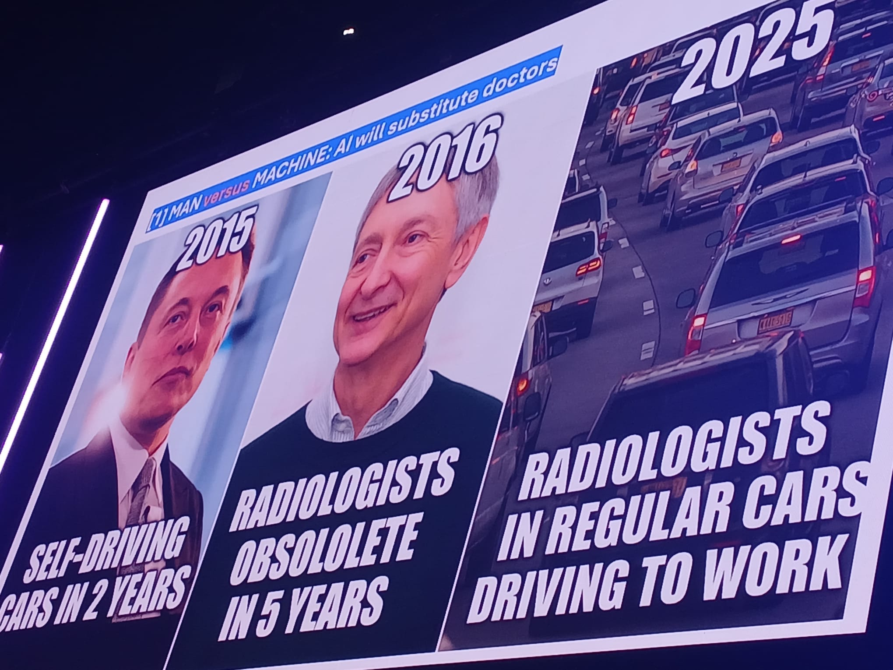

On Wednesday at the health.tech summit Basel 2026, this is what I took home with me as a souvenir:
- An article: Shen, J. H., & Tamkin, A. (2026). How AI Impacts Skill Formation. arXiv:2601.20245. Referenced by Dr. Vivienne Ming in the "Robot-Proof: How Human Agency Drives Hybrid Intelligence & Discovery" session. A very interesting article if you are starting to write your first lines of code and indiscriminately use your favorite AI, delegating decision-making to it. You may experience a decrease in your ability to learn and debug errors, and you will not be more productive.
- An expression: "Corporate blah blah" from "Building isn't enough: How to use storytelling for internal buy-in" by Shannon Jenkins. I laughed a lot when I saw that she used this expression so openly in a presentation with so many people from large corporations. How many times have highly motivated employees who want to understand the company's strategy suffered through corporate events with a lot of "corporate blah blah"? A quick and very useful presentation.
- A reflection: AI implementation must be supported by a good data strategy. Jorge Juan Fernández García's presentation (CIO of Hospital Clínic Barcelona) "AI in Hospital: The Reality Behind the Revolution" was very insightful. It gave us some highlights about the reality hospitals face when introducing AI. It always fills me with pride to see speakers from my country at international conferences. Great professionals from sunny Spain!
At the health.tech summit Basel 2026, I heard repeatedly that AI is not here to replace anyone in the healthcare sector, in a reality where there is a shortage of healthcare professionals.
Today is the last day of the conference, and I'm at the Kantonsspital Baden, where a visit has been organized in collaboration with Siemens. Our hosts/speakers are Dr. Daniel Heller and Dr. Kuert Hoeller. Looking forward to getting started! 😊
EXTRA: funny photo taken from Jorge Juan Fernández García's presentation, 'AI in Hospital: The Reality Behind the Revolution'.